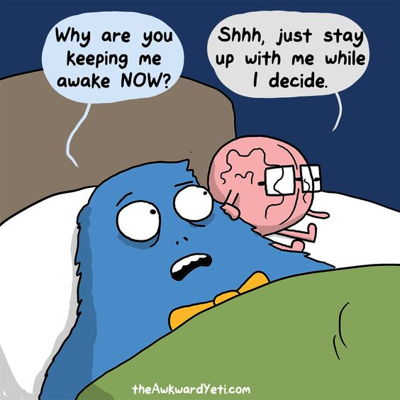

Insomnia
Restlessness or disorder
InsomniaRestlessness or disorder |
||
|---|---|---|
| Sleep deficiency is linked to many chronic health problems, including heart disease, kidney disease, high blood pressure, diabetes, stroke, obesity, and depression. Sleep deficiency is also linked to a higher chance of injury in adults, teens, and children. |  | |